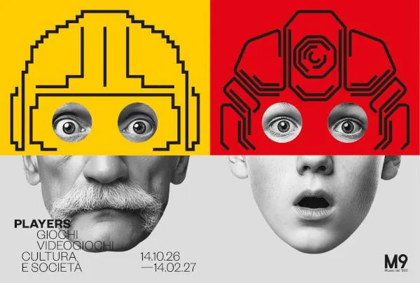

da mer 14 ott a dom 14 feb
PLAYERS. Giochi, Videogiochi, Cultura e Società
Un gettone, un cabinato, un joystick, un controller, uno smartphone, una console connessa con il mondo. Cambia la tecnologia, ma resta lo stesso desiderio: esplorare universi virtuali, vivere mille vite diverse, superare ostacoli, costruire mondi e continuare a giocare.
 Indicazioni
Indicazioni
- Costi e prenotazioni
- Costo non indicato · Prenotazione non indicata
- Programma
- Programma da verificare. Apri la fonte ufficiale per orari e possibili aggiornamenti.
- In caso di maltempo
- Nessuna indicazione specifica pubblicata.
- Note
- Acquisito automaticamente dalla fonte.
L’EVENTO
Descrizione completa
Un gettone, un cabinato, un joystick, un controller, uno smartphone, una console connessa con il mondo. Cambia la tecnologia, ma resta lo stesso desiderio: esplorare universi virtuali, vivere mille vite diverse, superare ostacoli, costruire mondi e continuare a giocare.
M9 - Museo del '900 presenta PLAYERS. Giochi, videogiochi, cultura e società , una mostra che attraversa un secolo di storia attraverso la lente del videogioco e invita il pubblico a sperimentarlo in prima persona.
PLAYERS è una mostra che si gioca. Cabinati arcade degli anni Ottanta, console dagli anni Cinquanta a oggi, postazioni interattive in ogni sezione del percorso: il pubblico prende in mano il controller e rivive in prima persona i cambiamenti sociali e culturali del XX secolo partita dopo partita, dai primi esperimenti nei laboratori universitari fino ai dispositivi di ultima generazione.
Il videogioco è diventato uno dei linguaggi più influenti del nostro tempo: unisce interattività, narrazione, arte e tecnologia e accompagna l'evoluzione della società italiana ed europea. Guardando i videogiochi, possiamo raccontare le culture giovanili, i nuovi riti familiari che hanno attraversato le generazioni, le pratiche sociali collettive, i luoghi d'incontro dalla sala giochi alla cameretta, fino al salotto di casa.
Il percorso comincia nei due piani della collezione permanente, con un viaggio alla scoperta del gioco prima del videogioco: stili, consumi e costumi del Novecento tradotti in giocattoli che hanno costruito immaginari e abitudini sociali. Da qui la mostra si articola in tre sezioni. #PLAY è un viaggio storico attraverso i luoghi e le modalità sociali del gioco, dai laboratori universitari degli anni Cinquanta al salotto contemporaneo. #WATCH esplora il videogioco come spettacolo: arte, narrazione cinematografica, eSports, streaming. #CREATE racconta come nasce un videogioco, dalle figure professionali coinvolte nel ciclo realizzativo al pubblico che diventa co-creatore di esperienze.
Orari: mer, gio, ven, 10.00 – 18.00 sab, dom, 10.00 – 19.00 lun, mar, chiuso
IL PROGRAMMA
Programma e orari
Appuntamenti raccolti dalle fonti elencate. Dove manca un orario, non è ancora disponibile in questa scheda.
Programma pubblicato
- 2026-10-14 — 2027-02-14 ·
INFORMAZIONI UTILI
Prima di partire
- Controllare la fonte prima di partire.
ORGANIZZAZIONE